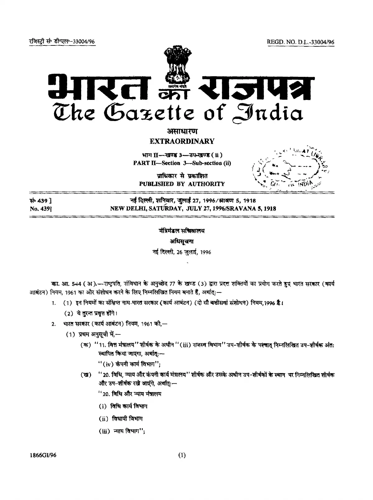
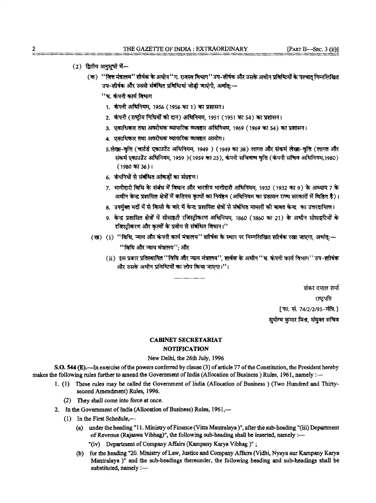
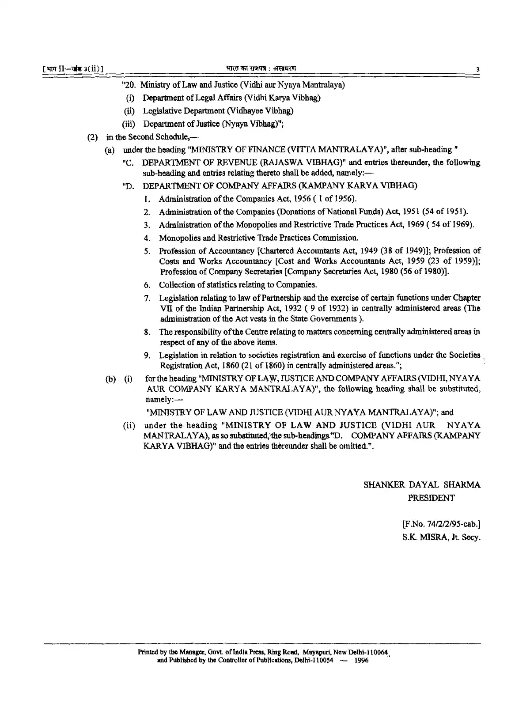

Amendment #232 (S.O. 544(E), 1996)
5 changes: 2 to the First Schedule, 3 to the Second Schedule. 5 applied
What it did to the ministries
- renamedMinistry of Law, Justice and Company Affairs is renamed Ministry of Law and Justice change 2, 4, 5 · histories: Law and Justice
The order, page by page
Page 1 of 4

Page 2 of 4

12after Schedule 1 › Ministry of Finance › Department of Revenue
- iv. Department of Company Affairs
applied at schedule 1 › ministry 11 › department iv in the Rules after #232
Schedule 1 › Ministry of Law, Justice and Company Affairs
- 20. Ministry of Law and Justice
- i. Department of Legal Affairs
- ii. Legislative Department (Vidhayee Vibhag)
- iii. Department of Justice
applied at schedule 1 › ministry 20 in the Rules after #232
Page 3 of 4

345after Schedule 2 › MINISTRY OF FINANCE › DEPARTMENT OF REVENUE
- D. DEPARTMENT OF COMPANY AFFAIRS
- 1. Administration of the Companies Act, 1956 ( 1 of 1956).
- 2. Administration of the Companies (Donations of National Funds) Act, 1951 (54 of 1951).
- 3. Administration of the Monopolies and Restrictive Trade Practices Act, 1969 (54 of 1969).
- 4. Monopolies and Restrictive Trade Practices Commission.
- 5. Profession of Accountancy [Chartered Accountants Act, 1949 (38 of 1949)]; Profession of Costs and Works Accountancy [Cost and Works Accountants Act, 1959 (23 of 1959)] Profession of Company Secretaries [Company Secretaries Act, 1980 (56 of 1980)].
and 4 more
- 6. Collection of statistics relating to Companies.
- 7. Legislation relating to law of Partnership and the exercise of certain functions under Chapter VII of the Indian Partnership Act, 1932 (9 of 1932) in centrally administered areas (The administration of the Act vests in the State Governments).
- 8. The responsibility of the Centre relating to matters concerning centrally administered areas in respect of any of the above items.
- 9. Legislation in relation to societies registration and exercise of functions under the Societies Registration Act, 1860 (21 of 1860) in centrally administered areas.
applied at schedule 2 › ministry MINISTRY OF FINANCE › department D in the Rules after #232
Schedule 2 › MINISTRY OF LAW, JUSTICE AND COMPANY AFFAIRS
- MINISTRY OF LAW AND JUSTICE
applied at schedule 2 › ministry MINISTRY OF LAW AND JUSTICE in the Rules after #232
Schedule 2 › MINISTRY OF LAW AND JUSTICE › COMPANY AFFAIRS
applied at schedule 2 › ministry MINISTRY OF LAW AND JUSTICE › department D in the Rules after #232
states inferred loose
Page 4 of 4
How this document was read
Edits to the reading
| Date | By | Edit | Before → after |
|---|---|---|---|
| 11 November 2026 | mukundesh | word corrected |
Changes placed by an inference rule
| Change | Rule | Status | What |
|---|---|---|---|
| 5 | loose | accepted | change 5: department COMPANY AFFAIRS taken for department DEPARTMENT OF COMPANY AFFAIRS, named loosely |
From the Government of India (Allocation of Business) Rules, 1961 and their amendments, as published by the Cabinet Secretariat (cabsec.gov.in), read by orgpedia. The readings of the older scanned gazettes have known gaps.